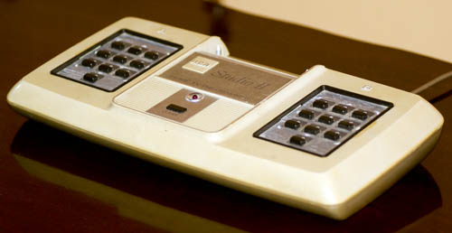
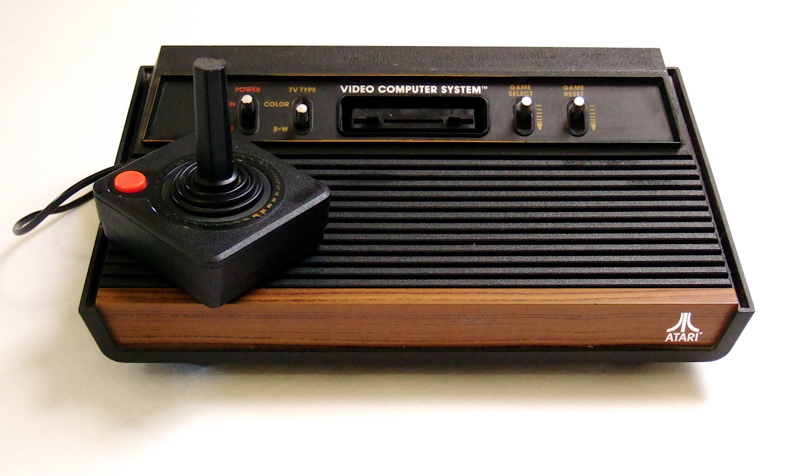
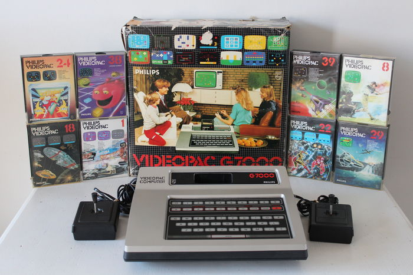
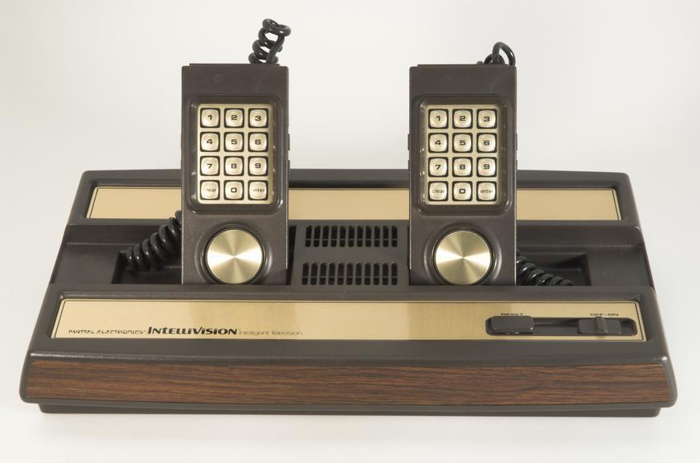
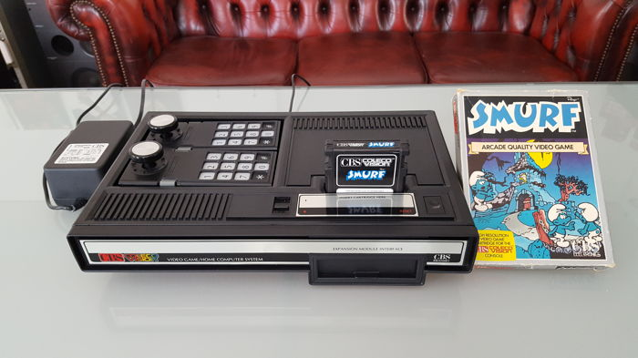

RCA Studio II
- Fabricante: RCA
- Procesador: RCA 1802 @ 1.78 MHz.
- Formato: Cartuchos.
- Librería de juegos: Unos 10 originales.
- Precio Original: NA.
- Ventas: Pocas. Muy pocas.
Atari 2600 (Atari VCS)
- Fabricante: Atari
- Procesador: MOS 6507 @ 1.19 MHz.
- Formato: Cartuchos.
- Librería de juegos: Más de 550.
- Precio Original: 35.000 pesetas en 1978.
- Ventas: Unos 30 millones de consolas.


Atari 5200
- Fabricante: Atari
- Procesador: MOS 6502C @ 1.79 MHz.
- Formato: Cartucho.
- Puertos: 4 en los primeros modelos, 2 en los posteriores.
- Librería de juegos: 69. No retrocompatible.
- Precio Original: 330$.
- Ventas: 1 millón de consolas.
Philips Videopac G7000
- Fabricante: Philips (UE) / Magnavox (USA)
- Procesador: Intel 8048.
- Formato: Cartuchos.
- Librería de juegos: Unos 45.
- Precio Original: 199$ en Estados Unidos.
- Ventas: Unos 2 millones de consolas, a medias entre EEUU y Europa.


Mattel Intellivision
- Fabricante: Mattel
- Procesador: General Instrument CP1610 16-bit CPU @ 894.886 kHz.
- Formato: Cartuchos.
- Librería de juegos: Unos 160.
- Precio Original: 299$ en Estados Unidos.
- Ventas: Unos 3 millones de consolas.
CBS Colecovision
- Fabricante: Coleco (Connecticut Leather Company)
- Procesador: NEC Zilog Z80A @ 3.58 MHz.
- Formato: Cartuchos.
- Librería de juegos: Unos 145.
- Precio Original: 175$ en Estados Unidos.
- Ventas: Unos 6 millones de consolas, 2 en EEUU y la mayoría de los otros 4 en Europa.
